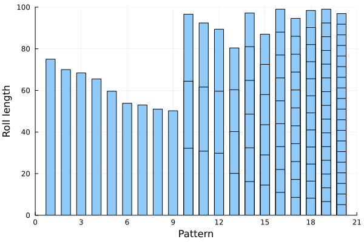
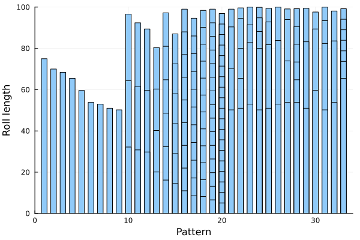

Column generation
This tutorial was generated using Literate.jl. Download the source as a .jl file.
This tutorial demonstrates the column generation algorithm by solving the cutting stock problem, which minimises the number of large rolls needed to satisfy demand for a set of smaller piece widths.
Learning intentions:
- Understand why column generation avoids enumerating all cutting patterns by starting from a small set and iteratively adding only the most profitable one, guided by LP dual variables
- Formulate the pricing subproblem as a knapsack integer program whose objective uses the current dual prices, and recognize a positive reduced cost as the signal that a new column is worth adding
- Convert the final LP relaxation to a practical integer solution by re-imposing integrality and re-solving
Required packages
This tutorial uses the following packages:
using JuMPimport DataFramesimport HiGHSimport Plotsimport SparseArraysimport TestBackground
The cutting stock problem is about cutting large rolls of paper into smaller pieces.
We denote the set of possible sized pieces that a roll can be cut into by $i\in 1,\ldots,I$. Each piece $i$ has a width, $w_i$, and a demand, $d_i$. The width of the large roll is $W$.
Our objective is to minimize the number of rolls needed to meet all demand.
Here's the data that we are going to use in this tutorial:
struct Piece w::Float64 d::Intendstruct Data pieces::Vector{Piece} W::Float64endfunction Base.show(io::IO, d::Data) println(io, "Data for the cutting stock problem:") println(io, " W = $(d.W)") println(io, "with pieces:") println(io, " i w_i d_i") println(io, " ------------") for (i, p) in enumerate(d.pieces) println(io, lpad(i, 4), " ", lpad(p.w, 5), " ", lpad(p.d, 3)) end returnendfunction get_data() data = [ 75.0 38 70.0 41 68.4 34 65.5 23 59.6 18 53.8 33 53.0 36 51.0 41 50.2 35 32.2 37 30.8 44 29.8 49 20.1 37 16.2 36 14.5 42 11.0 33 8.6 47 8.2 35 6.6 49 5.1 42 ] return Data([Piece(data[i, 1], data[i, 2]) for i in axes(data, 1)], 100.0)enddata = get_data()Data for the cutting stock problem:
W = 100.0
with pieces:
i w_i d_i
------------
1 75.0 38
2 70.0 41
3 68.4 34
4 65.5 23
5 59.6 18
6 53.8 33
7 53.0 36
8 51.0 41
9 50.2 35
10 32.2 37
11 30.8 44
12 29.8 49
13 20.1 37
14 16.2 36
15 14.5 42
16 11.0 33
17 8.6 47
18 8.2 35
19 6.6 49
20 5.1 42
Mathematical formulation
To formulate the cutting stock problem as a mixed-integer linear program, we assume that there is a set of large rolls $j=1,\ldots,J$ to use. Then, we introduce two classes of decision variables:
- $x_{ij} \ge 0,\; \text{integer}, \; \forall i=1,\ldots,I,\; j=1,\ldots,J$
- $y_{j} \in \{0, 1\},\; \forall j=1,\ldots,J.$
$y_j$ is a binary variable that indicates if we use roll $j$, and $x_{ij}$ counts how many pieces of size $i$ that we cut from roll $j$.
Our mixed-integer linear program is therefore:
\[\begin{align} \min & \sum\limits_{j=1}^J y_j \\ \;\;\text{s.t.} & \sum\limits_{i=1}^I w_i x_{ij} \le W y_j & \forall j=1,\ldots,J \\ & \sum\limits_{j=1}^J x_{ij} \ge d_i & \forall i=1,\ldots,I \\ & x_{ij} \ge 0 & \forall i=1,\ldots,I, j=1,\ldots,J \\ & x_{ij} \in \mathbb{Z} & \forall i=1,\ldots,I, j=1,\ldots,J \\ & y_{j} \in \{0, 1\} & \forall j=1,\ldots,J \\ \end{align}\]
The objective is to minimize the number of rolls that we use, and the two constraints ensure that we respect the total width of each large roll and that we satisfy demand exactly.
The JuMP formulation of this model is:
I = length(data.pieces)J = 1_000 # Some large numbermodel = Model(HiGHS.Optimizer)set_silent(model)@variable(model, x[1:I, 1:J] >= 0, Int)@variable(model, y[1:J], Bin)@objective(model, Min, sum(y))@constraint(model, [i in 1:I], sum(x[i, :]) >= data.pieces[i].d)@constraint( model, [j in 1:J], sum(data.pieces[i].w * x[i, j] for i in 1:I) <= data.W * y[j],);Unfortunately, we can't solve this formulation for realistic instances because it takes a very long time to solve. (Try removing the time limit.)
set_time_limit_sec(model, 5.0)optimize!(model)solution_summary(model)solution_summary(; result = 1, verbose = false)
├ solver_name : HiGHS
├ Termination
│ ├ termination_status : TIME_LIMIT
│ ├ result_count : 1
│ ├ raw_status : kHighsModelStatusTimeLimit
│ └ objective_bound : 2.57000e+02
├ Solution (result = 1)
│ ├ primal_status : FEASIBLE_POINT
│ ├ dual_status : NO_SOLUTION
│ ├ objective_value : 3.68000e+02
│ ├ dual_objective_value : NaN
│ └ relative_gap : 3.01630e-01
└ Work counters
├ solve_time (sec) : 5.01757e+00
├ simplex_iterations : 16172
├ barrier_iterations : -1
└ node_count : 0However, there is a formulation that solves much faster, and that is to use a column generation scheme.
Column generation theory
The key insight for column generation is to recognize that feasible columns in the $x$ matrix of variables encode cutting patterns.
For example, if we look only at the roll $j=1$, then a feasible solution is:
- $x_{1,1} = 1$ (1 unit of piece #1)
- $x_{13,1} = 1$ (1 unit of piece #13)
- All other $x_{i,1} = 0$
Another solution is
- $x_{20,1} = 19$ (19 unit of piece #20)
- All other $x_{i,1} = 0$
Cutting patterns like $x_{1,1} = 1$ and $x_{2,1} = 1$ are infeasible because the combined length is greater than $W$.
Since there are a finite number of ways that we could cut a roll into a valid cutting pattern, we could create a set of all possible cutting patterns $p = 1,\ldots,P$, with data $a_{i,p}$ indicating how many units of piece $i$ we cut in pattern $p$. Then, we can formulate our mixed-integer linear program as:
\[\begin{align} \min & \sum\limits_{p=1}^P x_p \\ \;\;\text{s.t.} & \sum\limits_{p=1}^P a_{ip} x_p \ge d_i & \forall i=1,\ldots,I \\ & x_{p} \ge 0 & \forall p=1,\ldots,P \\ & x_{p} \in \mathbb{Z} & \forall p=1,\ldots,P \end{align}\]
Unfortunately, there will be a very large number of these patterns, so it is often intractable to enumerate all columns $p=1,\ldots,P$.
Column generation is an iterative algorithm that starts with a small set of initial patterns, and then cleverly chooses new columns to add to the main MILP so that we find the optimal solution without having to enumerate every column.
Choosing the initial set of patterns
For the initial set of patterns, we create a trivial cutting pattern which cuts as many units of piece $i$ as will fit.
patterns = map(1:I) do i n_pieces = floor(Int, data.W / data.pieces[i].w) return SparseArrays.sparsevec([i], [n_pieces], I)end20-element Vector{SparseArrays.SparseVector{Int64, Int64}}:
sparsevec([1], [1], 20)
sparsevec([2], [1], 20)
sparsevec([3], [1], 20)
sparsevec([4], [1], 20)
sparsevec([5], [1], 20)
sparsevec([6], [1], 20)
sparsevec([7], [1], 20)
sparsevec([8], [1], 20)
sparsevec([9], [1], 20)
sparsevec([10], [3], 20)
sparsevec([11], [3], 20)
sparsevec([12], [3], 20)
sparsevec([13], [4], 20)
sparsevec([14], [6], 20)
sparsevec([15], [6], 20)
sparsevec([16], [9], 20)
sparsevec([17], [11], 20)
sparsevec([18], [12], 20)
sparsevec([19], [15], 20)
sparsevec([20], [19], 20)We can visualize the patterns as follows:
""" cutting_locations(data::Data, pattern::SparseArrays.SparseVector)A function which returns a vector of the locations along the roll at which tocut in order to produce pattern `pattern`."""function cutting_locations(data::Data, pattern::SparseArrays.SparseVector) locations = Float64[] offset = 0.0 for (i, c) in zip(SparseArrays.findnz(pattern)...) for _ in 1:c offset += data.pieces[i].w push!(locations, offset) end end return locationsendfunction plot_patterns(data::Data, patterns) plot = Plots.bar(; xlims = (0, length(patterns) + 1), ylims = (0, data.W), xlabel = "Pattern", ylabel = "Roll length", ) for (i, p) in enumerate(patterns) locations = cutting_locations(data, p) Plots.bar!( plot, fill(i, length(locations)), reverse(locations); bar_width = 0.6, label = false, color = "#90caf9", ) end return plotendplot_patterns(data, patterns)
The base problem
Using the initial set of patterns, we can create and optimize our base model:
model = Model(HiGHS.Optimizer)set_silent(model)@variable(model, x[1:length(patterns)] >= 0, Int)@objective(model, Min, sum(x))@constraint(model, demand[i in 1:I], patterns[i]' * x >= data.pieces[i].d)optimize!(model)assert_is_solved_and_feasible(model)Test.@test isapprox(objective_value(model), 386; atol = 1e-6)solution_summary(model)solution_summary(; result = 1, verbose = false)
├ solver_name : HiGHS
├ Termination
│ ├ termination_status : OPTIMAL
│ ├ result_count : 1
│ ├ raw_status : kHighsModelStatusOptimal
│ └ objective_bound : 3.86000e+02
├ Solution (result = 1)
│ ├ primal_status : FEASIBLE_POINT
│ ├ dual_status : NO_SOLUTION
│ ├ objective_value : 3.86000e+02
│ ├ dual_objective_value : NaN
│ └ relative_gap : 0.00000e+00
└ Work counters
├ solve_time (sec) : 3.65496e-04
├ simplex_iterations : 0
├ barrier_iterations : -1
└ node_count : 0This solution requires 386 rolls. This solution is sub-optimal because the model does not contain the full set of possible patterns.
How do we find a new column that leads to an improved solution?
Choosing new columns
Column generation chooses a new column by relaxing the integrality constraint on $x$ and looking at the dual variable $\pi_i$ associated with demand constraint $i$.
For example, the dual of demand[13] is:
unset_integer.(x)optimize!(model)assert_is_solved_and_feasible(model; dual = true)π_13 = dual(demand[13])0.25Using the economic interpretation of the dual variable, we can say that a one unit increase in demand for piece $i$ will cost an extra $\pi_i$ rolls. Alternatively, we can say that a one unit increase in the left-hand side (for example, due to a new cutting pattern) will save us $\pi_i$ rolls. Therefore, we want a new column that maximizes the savings associated with the dual variables, while respecting the total width of the roll:
\[\begin{align} \max & \sum\limits_{i=1}^I \pi_i y_i \\ \;\;\text{s.t.} & \sum\limits_{i=1}^I w_i y_{i} \le W \\ & y_{i} \ge 0 & \forall i=1,\ldots,I \\ & y_{i} \in \mathbb{Z} & \forall i=1,\ldots,I \\ \end{align}\]
If this problem, called the pricing problem, has an objective value greater than $1$, then we estimate than adding y as the coefficients of a new column will decrease the objective by more than the cost of an extra roll.
Here is code to solve the pricing problem:
function solve_pricing(data::Data, π::Vector{Float64}) I = length(π) model = Model(HiGHS.Optimizer) set_silent(model) @variable(model, y[1:I] >= 0, Int) @constraint(model, sum(data.pieces[i].w * y[i] for i in 1:I) <= data.W) @objective(model, Max, sum(π[i] * y[i] for i in 1:I)) optimize!(model) assert_is_solved_and_feasible(model) number_of_rolls_saved = objective_value(model) if number_of_rolls_saved > 1 + 1e-8 # Benefit of pattern is more than the cost of a new roll plus some # tolerance return SparseArrays.sparse(round.(Int, value.(y))) end return nothingendsolve_pricing (generic function with 1 method)If we solve the pricing problem with an artificial dual vector:
solve_pricing(data, [1.0 / i for i in 1:I])20-element SparseArrays.SparseVector{Int64, Int64} with 3 stored entries:
[1 ] = 1
[17] = 1
[20] = 3the solution is a roll with 1 unit of piece #1, 1 unit of piece #17, and 3 units of piece #20.
If we solve the pricing problem with a dual vector of zeros, then the benefit of the new pattern is less than the cost of a roll, and so the function returns nothing:
solve_pricing(data, zeros(I))Iterative algorithm
Now we can combine our base model with the pricing subproblem in an iterative column generation scheme:
while true # Solve the linear relaxation optimize!(model) assert_is_solved_and_feasible(model; dual = true) # Obtain a new dual vector π = dual.(demand) # Solve the pricing problem new_pattern = solve_pricing(data, π) # Stop iterating if there is no new pattern if new_pattern === nothing @info "No new patterns, terminating the algorithm." break end push!(patterns, new_pattern) # Create a new column push!(x, @variable(model, lower_bound = 0)) # Update the objective coefficient of the new column set_objective_coefficient(model, x[end], 1.0) # Update the non-zeros in the coefficient matrix for (i, count) in zip(SparseArrays.findnz(new_pattern)...) set_normalized_coefficient(demand[i], x[end], count) end println("Found new pattern. Total patterns = $(length(patterns))")endFound new pattern. Total patterns = 21
Found new pattern. Total patterns = 22
Found new pattern. Total patterns = 23
Found new pattern. Total patterns = 24
Found new pattern. Total patterns = 25
Found new pattern. Total patterns = 26
Found new pattern. Total patterns = 27
Found new pattern. Total patterns = 28
Found new pattern. Total patterns = 29
Found new pattern. Total patterns = 30
Found new pattern. Total patterns = 31
Found new pattern. Total patterns = 32
Found new pattern. Total patterns = 33
[ Info: No new patterns, terminating the algorithm.We found lots of new patterns. Here's pattern 21:
patterns[21]20-element SparseArrays.SparseVector{Int64, Int64} with 3 stored entries:
[9 ] = 1
[13] = 2
[17] = 1Let's have a look at the patterns now:
plot_patterns(data, patterns)
Looking at the solution
Let's see how many of each column we need:
solution = DataFrames.DataFrame([ (pattern = p, rolls = value(x_p)) for (p, x_p) in enumerate(x)])filter!(row -> row.rolls > 0, solution)| Row | pattern | rolls |
|---|---|---|
| Int64 | Float64 | |
| 1 | 1 | 38.0 |
| 2 | 2 | 41.0 |
| 3 | 3 | 34.0 |
| 4 | 4 | 7.94118 |
| 5 | 21 | 6.29412 |
| 6 | 22 | 8.41176 |
| 7 | 23 | 12.2941 |
| 8 | 24 | 1.94118 |
| 9 | 25 | 20.2941 |
| 10 | 26 | 23.7059 |
| 11 | 27 | 12.2059 |
| 12 | 28 | 4.02941 |
| 13 | 29 | 12.2941 |
| 14 | 30 | 18.0 |
| 15 | 31 | 26.7647 |
| 16 | 32 | 16.7647 |
| 17 | 33 | 15.0588 |
Since we solved a linear program, some of our columns have fractional solutions. We can create a integer feasible solution by rounding up the orders. This requires 306 rolls:
Test.@test sum(ceil.(Int, solution.rolls)) == 306Test PassedAlternatively, we can re-introduce the integrality constraints and resolve the problem:
set_integer.(x)optimize!(model)assert_is_solved_and_feasible(model)solution = DataFrames.DataFrame([ (pattern = p, rolls = value(x_p)) for (p, x_p) in enumerate(x)])filter!(row -> row.rolls > 0, solution)| Row | pattern | rolls |
|---|---|---|
| Int64 | Float64 | |
| 1 | 1 | 38.0 |
| 2 | 2 | 41.0 |
| 3 | 3 | 34.0 |
| 4 | 21 | 6.0 |
| 5 | 22 | 9.0 |
| 6 | 23 | 12.0 |
| 7 | 24 | 4.0 |
| 8 | 25 | 20.0 |
| 9 | 26 | 24.0 |
| 10 | 27 | 13.0 |
| 11 | 28 | 5.0 |
| 12 | 29 | 12.0 |
| 13 | 30 | 18.0 |
| 14 | 31 | 25.0 |
| 15 | 32 | 15.0 |
| 16 | 33 | 23.0 |
This now requires 299 rolls:
Test.@test isapprox(sum(solution.rolls), 299; atol = 1e-6)sum(solution.rolls)299.0Note that this may not be the global minimum because we are not adding new columns during the solution of the mixed-integer problem model (an algorithm known as branch and price). Nevertheless, the column generation algorithm typically finds good integer feasible solutions to an otherwise intractable optimization problem.
Next steps
- Our objective function is to minimize the total number of rolls. What is the total length of waste? How does that compare to the total demand?
- Writing the optimization algorithm is only part of the challenge. Can you develop a better way to communicate the solution to stakeholders?